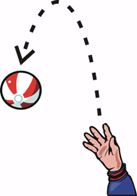

Ball
Conceptual questions on free fall and motion on an incline without friction.
A child throws a ball vertically into the air. Neglecting air resistance, at the top of the ball's flight, where the ball reverses direction, the ball's acceleration is
Upward
Zero
Downard
None of the above